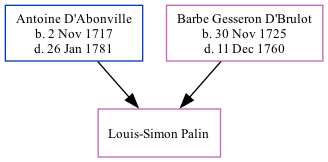

Louis-Simon Palin c1755 -
[ Home ] | [ Calendar ] | [ Surnames Index ] | [ Family History ]The child of Antoine D'Abonville and Barbe Gesseron D'Brulot, Louis-Simon Palin was baptized in Québec on Nov 10, 1755.
Parents
- Antoine was born on Nov 2, 1717
- Barbe Elizabeth was born on Nov 30, 1725
Family Tree
Generated by ged2site. Last updated on Sep 9, 2024